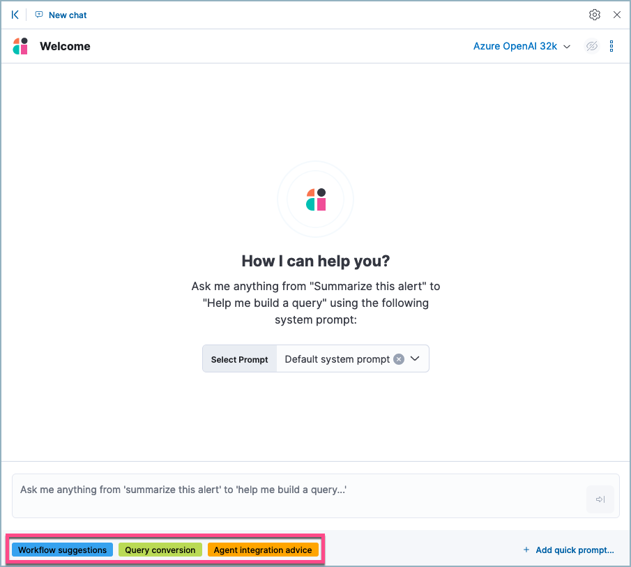
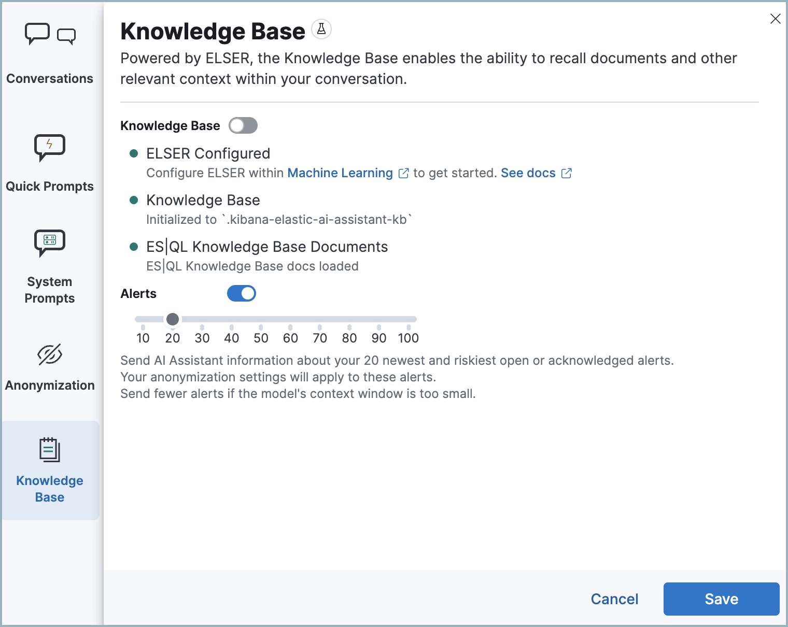

AI Assistantedit
The Elastic AI Assistant utilizes generative AI to bolster your cybersecurity operations team. It allows users to interact with Elastic Security for tasks such as alert investigation, incident response, and query generation or conversion using natural language and much more.
AI Assistant relies on generative AI connectors to communicate with third-party AI providers.

The Elastic AI Assistant is designed to enhance your analysis with smart dialogues. Its capabilities are still developing. Users should exercise caution as the quality of its responses might vary. Your insights and feedback will help us improve this feature. Always cross-verify AI-generated advice for accuracy.
When choosing a third-party provider to use with AI Assistant, remember that different services may impose rate limits on their APIs. This may negatively affect AI Assistant performance. In addition, different models support various context lengths. Models with larger context lengths will provide a better experience when using the AI Assistant.
For example, refer to OpenAI’s documentation on rate limits and GPT-4 models for more information on their available options.
Your data and AI Assistantedit
Elastic does not store or examine prompts or results used by AI Assistant, or use this data for model training. This includes anything you send the model, such as alert or event data, detection rule configurations, queries, and prompts. However, any data you provide to AI Assistant will be processed by the third-party large language model (LLM) provider you connected to as part of AI Assistant setup.
Elastic does not control third-party tools, and assumes no responsibility or liability for their content, operation, or use, nor for any loss or damage that may arise from your using such tools. Please exercise caution when using AI tools with personal, sensitive, or confidential information. Any data you submit may be used by the provider for AI training or other purposes. There is no guarantee that the provider will keep any information you provide secure or confidential. You should familiarize yourself with the privacy practices and terms of use of any generative AI tools prior to use.
Elastic can automatically anonymize event data that you provide to AI Assistant as context. To learn more, refer to Configure AI Assistant.
Set up AI Assistantedit
You must create a generative AI connector before you can use AI Assistant.
- Open AI Assistant Cmd + ; (or Ctrl + ; on Windows), and click Connector → Add new Connector.
- Select either Amazon Bedrock or OpenAI.
- Enter the authentication details required for your chosen connector type, then click Save.
For OpenAI and Azure OpenAI Service, you need to provide an API key. For Amazon Bedrock, you need to provide an access key and secret for an IAM user with at least the following permissions:
Click to expand permissions JSON
{
"Version": "2012-10-17",
"Statement": [
{
"Sid": "VisualEditor0",
"Effect": "Allow",
"Action": [
"bedrock:InvokeModel",
"bedrock:InvokeModelWithResponseStream"
],
"Resource": "*"
}
]
}
For Amazon Bedrock, only Anthropic models are supported: Claude and Claude Instant. You need to enable them in AWS before setting up an Amazon Bedrock connector. You can configure an Amazon Bedrock connector to use any AWS region where Anthropic models are supported by editing the URL field under Connector settings, for example by changing us-west-2 to eu-central-1.
For more information about setting up generative AI connectors, refer to OpenAI connector or Amazon Bedrock connector.
Start chattingedit
To open AI Assistant, select the AI Assistant button in the top toolbar from anywhere in the Elastic Security app. You can also use the keyboard shortcut Cmd + ; (or Ctrl + ; on Windows).

This opens the Welcome chat interface, where you can ask general questions about Elastic Security.
You can also chat with AI Assistant from several particular pages in Elastic Security where you can easily send context-specific data and prompts to AI Assistant.
- Alert details or Event details flyout: Click Chat while viewing the details of an alert or event.
- Rules page: Select one or more rules, then click the Chat button at the top right of the page.
- Data Quality dashboard: Select the Incompatible fields tab, then click Chat. (This is only available for fields marked red, indicating they’re incompatible).
- Timeline: Select the Security Assistant tab.
All chat history and custom quick prompts persist in local browser storage, allowing you to navigate away to other areas in Elastic Security, then return to ongoing conversations. This also means that chats persist across multiple users if they use the same browser; be sure clear any chats that you don’t want available to other users.
Interact with AI Assistantedit
Use these features to adjust and act on your conversations with AI Assistant:
-
Select a system prompt at the beginning of a conversation to establish how detailed and technical you want AI Assistant’s answers to be.
System prompts provide context to the model, informing its response. To create a custom system prompt, open the system prompts dropdown menu and click + Add new system prompt….
-
Select a quick prompt at the bottom of the chat window to get help writing a prompt for a specific purpose, such as summarizing an alert or converting a query from a legacy SIEM to Elastic Security.
Quick prompt availability varies based on context — for example, the Alert summarization quick prompt appears when you open AI Assistant while viewing an alert. To customize existing quick prompts and create new ones, click Add Quick prompt.
-
Use these buttons to perform actions in the conversation history and prompt entry area:
- Add note to timeline (): Add the selected text to your currently active Timeline as a note.
- Add to existing case (): Add a comment to an existing case using the selected text.
-
Copy to clipboard (
 ): Copy the text to clipboard to paste elsewhere. Also helpful for resubmitting a previous prompt.
): Copy the text to clipboard to paste elsewhere. Also helpful for resubmitting a previous prompt.
-
Add to timeline (
 ): Add a filter or query to Timeline using the text. This button appears for particular queries in AI Assistant’s responses.
): Add a filter or query to Timeline using the text. This button appears for particular queries in AI Assistant’s responses.Be sure to specify which language you’d like AI Assistant to use when writing a query. For example: "Can you generate an Event Query Language query to find four failed logins followed by a successful login?"
-
Clear chat (
 ): Delete the conversation history and start a new chat.
): Delete the conversation history and start a new chat.
Configure AI Assistantedit
The Settings menu () allows you to configure default conversations, quick prompts, system prompts, and data anonymization.
The Settings menu has the following tabs:
- Conversations: When you open AI Assistant from certain pages, such as Timeline or Alerts, it defaults to the relevant conversation type. Choose the default system prompt for each conversation type, the connector, and model (if applicable).
- Quick Prompts: Modify existing quick prompts or create new ones. To create a new quick prompt, type a unique name in the Name field, then press enter. Under Prompt, enter or update the quick prompt’s text. Under Contexts, select where the quick prompt should appear.
-
System Prompts: Edit existing system prompts or create new ones. To create a new system prompt, type a unique name in the Name field, then press enter. Under Prompt, enter or update the system prompt’s text. Under Contexts, select where the system prompt should appear.
To delete a custom prompt, open the Name drop-down menu, hover over the prompt you want to delete, and click the X that appears. You cannot delete the default prompts.
- Anonymization: Select fields to include as plaintext, to obfuscate, and to not send when you provide events to AI Assistant as context. Learn more.
- Knowledge base: Provide additional context to AI Assistant so it can answer questions about ES|QL and alerts in your environment. Learn more.
Anonymizationedit
The Anonymization tab of the AI Assistant settings menu allows you to define default data anonymization behavior for events you send to AI Assistant. You can update these settings for individual events when you include them in the chat.
The fields on this list are among those most likely to provide relevant context to AI Assistant. Fields with Allowed toggled on are included. Allowed fields with Anonymized set to Yes are included, but with their values obfuscated.

When you include a particular event as context, you can use a similar interface to adjust anonymization behavior. Be sure the anonymization behavior meets your specifications before sending a message with the event attached.
The Show anonymized toggle controls whether you see the obfuscated or plaintext versions of the fields you sent to AI Assistant. It doesn’t control what gets obfuscated — that’s determined by the anonymization settings. It also doesn’t affect how event fields appear before being sent to AI Assistant. Instead, it controls how fields that were already sent and obfuscated appear to you.
Knowledge baseedit
Do not use ES|QL on production environments. This functionality is in beta and is subject to change. The design and code is less mature than official GA features and is being provided as-is with no warranties. Beta features are not subject to the support SLA of official GA features.
The Knowledge base tab of the AI Assistant settings menu allows you to enable AI Assistant to answer questions about the Elastic Search Query Language (ES|QL), and about alerts in your environment.
Knowledge base for ES|QLedit
When this feature is enabled, AI Assistant can help you write an ES|QL query for a particular use case, or answer general questions about ES|QL syntax and usage. To enable AI Assistant to answer questions about ES|QL:
- Enable the Elastic Learned Sparse EncodeR (ELSER). This model provides additional context to the third-party LLM. To learn more, refer to Configure ELSER.
- Initialize the knowledge base by clicking Initialize.
- Turn on the Knowledge Base option.
- Click Save. The knowledge base is now active. A quick prompt for ES|QL queries becomes available, which provides a good starting point for your ES|QL conversations and questions.
To update AI Assistant so that it uses the most current ES|QL documentation to answer your questions, click Delete next to Knowledge Base, and toggle the Knowledge Base slider off and then on.
Knowledge base for alertsedit
When this feature is enabled, AI Assistant will receive multiple alerts as context for each of your prompts. It will receive alerts from the last 24 hours that have a status of open or acknowledged, ordered first by risk score, then by recency. Building block alerts are excluded. This enables it to answer questions about multiple alerts in your environment, rather than just the individual alerts you choose to include as context.
To enable RAG for alerts:
- Turn on the Alerts setting.
-
Use the slider to select the number of alerts to send to AI Assistant.

Including a large number of alerts may cause your request to exceed the maximum token length of your third-party generative AI provider. If this happens, try selecting a lower number of alerts to send.
Get the most from your queriesedit
Elastic AI Assistant helps you take full advantage of the Elastic Security platform to improve your security operations. Its ability to assist you depends on the specificity and detail of your questions. The more context and detail you provide, the more tailored and useful its responses will be.
To maximize its usefulness, consider using more detailed prompts or asking for additional information. For instance, after asking for an ES|QL query example, you could ask a follow-up question like, “Could you give me some other examples?” You can also ask for clarification or further exposition, for example "Please provide comments explaining the query you just gave."
In addition to practical advice, AI Assistant can offer conceptual advice, tips, and best practices for enhancing your security measures. You can ask it, for example:
- “How do I set up a machine learning job in Elastic Security to detect anomalies in network traffic volume over time?”
- “I need to monitor for unusual file creation patterns that could indicate ransomware activity. How would I construct this query using EQL?”